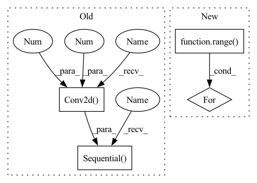

Pattern ID :16973
Before Change
nn.BatchNorm2d(oup),
)
self.conv2 = nn.Sequential(
// pw
nn.Conv2d(oup, hidden_dim, 1, 1, 0, bias=False),
nn.BatchNorm2d(hidden_dim),
nn.ReLU(inplace=False),
// dw
nn.Conv2d(hidden_dim, hidden_dim, 3, 1, 1, groups=hidden_dim, bias=False),
nn.BatchNorm2d(hidden_dim),
nn.ReLU(inplace=False),
// pw-linear
nn.Conv2d( hidden_dim, oup, 1 , 1 , 0, bias=False) ,
nn.BatchNorm2d(oup),
)
def forward(self, x):
x = self.conv1(x)
After Change
)
self.conv2 = torch.nn.ModuleList()
for i in range( n) :
self.conv2.append(IRBlock(oup, hidden_dim))
def forward(self, x):
x = self.conv1(x)
In pattern: SUPERPATTERN
Frequency: 3
Non-data size: 4
Instances Fragment ID: 57055814
Project Name: fire717/movenet.pytorch
Commit Name: 6eb59cd47bfde753530ed236335910bed9ba7c1d
Time: 2022-08-12
Author: fire15@126.com
File Name: lib/models/movenet_mobilenetv2.py
M Class Name: InvertedResidual
N Class Name: InvertedResidual
M Method Name: __init__(6)
N Method Name: __init__(6)
M Parent Class: nn.Module
N Parent Class: nn.Module
M File Name: lib/models/movenet_mobilenetv2.py
N File Name: lib/models/movenet_mobilenetv2.py
M Start Line: 83
M End Line: 113
N Start Line: 98
N End Line: 120
Before Change
)
// Upscale conv block.
self.upsampling = nn.Sequential(
nn.Conv2d(64, 256, (3, 3), (1, 1), (1, 1)),
nn.PixelShuffle(2),
nn.PReLU(),
nn.Conv2d(64 , 256 , (3, 3), (1, 1), (1, 1)) ,
nn.PixelShuffle(2),
nn.PReLU(),
)
// Output layer.
self.conv_block3 = nn.Conv2d(64, 3, (9, 9), (1, 1), (4, 4))
After Change
// Upscale block
upsampling = []
for _ in range( 2) :
upsampling.append(UpsampleBlock(64))
self.upsampling = nn.Sequential(*upsampling)
// Output layer. Fragment ID: 57055830
Project Name: lornatang/srgan-pytorch
Commit Name: 2c11f14c44490604941be00d7661b19ad8f96597
Time: 2022-02-14
Author: liuchangyu1111@gmail.com
File Name: model.py
M Class Name: Generator
N Class Name: Generator
M Method Name: __init__(1)
N Method Name: __init__(1)
M Parent Class: nn.Module
N Parent Class: nn.Module
M File Name: model.py
N File Name: model.py
M Start Line: 127
M End Line: 134
N Start Line: 143
N End Line: 146
Before Change
nn.BatchNorm2d(oup),
)
self.conv2 = nn.Sequential(
// pw
nn.Conv2d( oup, hidden_dim, 1 , 1 , 0, bias=False) ,
nn.BatchNorm2d(hidden_dim),
nn.ReLU(inplace=False),
// dw
nn.Conv2d(hidden_dim, hidden_dim, 3, 1, 1, groups=hidden_dim, bias=False),
nn.BatchNorm2d(hidden_dim),
nn.ReLU(inplace=False),
// pw-linear
nn.Conv2d(hidden_dim, oup, 1, 1, 0, bias=False),
nn.BatchNorm2d(oup),
)
def forward(self, x):
x = self.conv1(x)
After Change
)
self.conv2 = torch.nn.ModuleList()
for i in range( n) :
self.conv2.append(IRBlock(oup, hidden_dim))
def forward(self, x):
x = self.conv1(x)
Fragment ID: 57055815
Project Name: fire717/movenet.pytorch
Commit Name: 6eb59cd47bfde753530ed236335910bed9ba7c1d
Time: 2022-08-12
Author: fire15@126.com
File Name: lib/models/movenet_mobilenetv2.py
M Class Name: InvertedResidual
N Class Name: InvertedResidual
M Method Name: __init__(6)
N Method Name: __init__(6)
M Parent Class: nn.Module
N Parent Class: nn.Module
M File Name: lib/models/movenet_mobilenetv2.py
N File Name: lib/models/movenet_mobilenetv2.py
M Start Line: 83
M End Line: 113
N Start Line: 98
N End Line: 120
Before Change
super().__init__()
hdim = hidden_dim
self.encoder = nn.Sequential(
nn.Conv2d(3 , hdim, 4 , stride = 2, padding = 1) ,
nn.ReLU(),
nn.Conv2d(hdim, hdim, 4, stride = 2, padding = 1),
nn.ReLU(),
nn.Conv2d(hdim, hdim, 4, stride = 2, padding = 1),
nn.ReLU(),
nn.Conv2d(hdim, num_tokens, 1)
)
self.decoder = nn.Sequential(
nn.ConvTranspose2d(dim, hdim, 4, stride = 2, padding = 1),
nn.ReLU(),After Change
encoder_layers = []
decoder_layers = []
for i in range( num_layers) :
enc_in = 3 if i == 0 else hdim
dec_in = dim if i == 0 else hdim
encoder_layers += [
nn.Conv2d(enc_in, hdim, 4, stride = 2, padding = 1), Fragment ID: 57055808
Project Name: lucidrains/dalle-pytorch
Commit Name: 95a980129346b66ce7cbb3f984b698ca21e0965c
Time: 2021-01-06
Author: nauman.mustafa.x@gmail.com
File Name: dalle_pytorch/dalle_pytorch.py
M Class Name: DiscreteVAE
N Class Name: DiscreteVAE
M Method Name: __init__(5)
N Method Name: __init__(4)
M Parent Class: nn.Module
N Parent Class: nn.Module
M File Name: dalle_pytorch/dalle_pytorch.py
N File Name: dalle_pytorch/dalle_pytorch.py
M Start Line: 82
M End Line: 102
N Start Line: 80
N End Line: 107